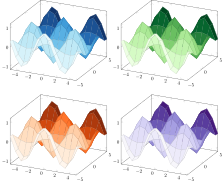
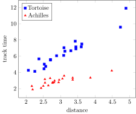
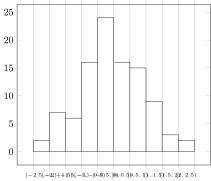
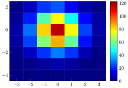

Julia types
There is some support to directly use Julia objects from different popular packages in PGFPlotsX.jl. Examples of these are given here.
Colors.jl
LineColor
Using a colorant as the line color
using Colors
μ = 0
σ = 1e-3
axis = Axis()
@pgf for (i, col) in enumerate(distinguishable_colors(10))
offset = i * 50
p = Plot(
{
color = col,
domain = "-3*$σ:3*$σ",
style = { ultra_thick },
samples = 50
},
Expression("exp(-(x-$μ)^2 / (2 * $σ^2)) / ($σ * sqrt(2*pi)) + $offset"))
push!(axis, p)
end
axis
Colormap
Using a colormap
using Colors
p = @pgf Plot3(
{
surf,
point_meta = "y",
samples = 13
},
Expression("cos(deg(x)) * sin(deg(y))")
)
colormaps = ["Blues", "Greens", "Oranges", "Purples"]
td = TikzDocument()
for cmap in colormaps
push_preamble!(td, (cmap, Colors.colormap(cmap)))
end
tp = @pgf TikzPicture({ "scale" => 0.5 })
push!(td, tp)
gp = @pgf GroupPlot({ group_style = {group_size = "2 by 2"}})
push!(tp, gp)
for cmap in colormaps
@pgf push!(gp, { colormap_name = cmap }, p)
end
ggplot2
Something that looks a bit like ggplot2.
using Colors
using LaTeXStrings
ggplot2_axis_theme = @pgf {
tick_align = "outside",
tick_pos = "left",
xmajorgrids,
x_grid_style = "white",
ymajorgrids,
y_grid_style = "white",
axis_line_style = "white",
"axis_background/.style" = {
fill = "white!89.803921568627459!black"
}
}
ggplot2_plot_theme = @pgf {
mark="*",
mark_size = 3,
mark_options = "solid",
line_width = "1.64pt",
}
x = 0:0.3:2
y1 = sin.(2x)
y2 = cos.(2x)
y3 = cos.(5x)
ys = [y1, y2, y3]
n = length(ys)
# Evenly spread out colors
colors = [LCHuv(65, 100, h) for h in range(15; stop = 360+15, length = n+1)][1:n]
@pgf Axis(
{
ggplot2_axis_theme...,
xmin = -0.095, xmax = 1.995,
ymin = -1.1, ymax =1.1,
title = L"Simple plot $\frac{\alpha}{2}$",
xlabel = "time (s)",
ylabel = "Voltage (mV)",
},
[
PlotInc(
{
ggplot2_plot_theme...,
color = colors[i]
},
Coordinates(x, _y))
for (i, _y) in enumerate(ys)]...,
)
DataFrames.jl
Creating a Table from a DataFrame will write it as expected.
using DataFrames
function mockdata(n, μ, σ, speed, racer)
distance = exp.(μ .+ randn(n).*σ)
noise = exp.(randn(n) * 0.1)
DataFrame(distance = distance,
tracktime = distance ./ (speed .* noise),
racer = fill(racer, n))
end
zenon_measurements = vcat(mockdata(20, 1, 0.2, 0.5, "Tortoise"),
mockdata(20, 1, 0.2, 1, "Achilles"))
@pgf Axis(
{
legend_pos = "north west",
xlabel = "distance",
ylabel = "track time",
},
Plot(
{
scatter,
"only marks",
"scatter src"="explicit symbolic",
"scatter/classes"=
{
Tortoise = {mark = "square*", "blue"},
Achilles = {mark = "triangle*", "red"},
}
},
Table(
{
x = "distance",
y = "tracktime",
meta = "racer"
},
zenon_measurements, # <--- Creating a Table from a DataFrame
)
),
Legend(["Tortoise", "Achilles"])
)
Countour.jl
A Table of a contour from the Contours.jl package will print as .tex in a format that is good to use with contour_prepared.
using Contour
x = 0.0:0.1:2π
y = 0.0:0.1:2π
f = (x,y) -> sin(x)*sin(y)
@pgf Plot({
contour_prepared,
very_thick
},
Table(contours(x, y, f.(x, y'), 6)))┌ Warning: `range(start, step, length)` is deprecated, use `range(start, step=step, length=length)` instead.
│ caller = contourlevels(::Array{Float64,2}, ::Int64) at Contour.jl:103
└ @ Contour ~/.julia/packages/Contour/5soA/src/Contour.jl:103
┌ Warning: `Array{T, 1}(m::Int) where T` is deprecated, use `Array{T, 1}(undef, m)` instead.
│ caller = coordinates at Contour.jl:112 [inlined]
└ @ Core ~/.julia/packages/Contour/5soA/src/Contour.jl:112
┌ Warning: `Array{T, 1}(m::Int) where T` is deprecated, use `Array{T, 1}(undef, m)` instead.
│ caller = coordinates at Contour.jl:113 [inlined]
└ @ Core ~/.julia/packages/Contour/5soA/src/Contour.jl:113
StatsBase.jl
StatsBase.Histogram can be plotted using Table, both for 1D and 2D histograms.
1D
using StatsBase: Histogram, fit
@pgf Axis(
{
"ybar interval",
"xticklabel interval boundaries",
xmajorgrids = false,
xticklabel = raw"$[\pgfmathprintnumber\tick,\pgfmathprintnumber\nexttick)$",
"xticklabel style" =
{
font = raw"\tiny"
},
},
Plot(Table(fit(Histogram, range(0; stop = 1, length = 100).^3, closed = :left))))
2D
using StatsBase: Histogram, fit
w = range(-1; stop = 1, length = 100) .^ 3
xy = vec(tuple.(w, w'))
h = fit(Histogram, (first.(xy), last.(xy)), closed = :left)
@pgf Axis(
{
view = (0, 90),
colorbar,
"colormap/jet"
},
Plot3(
{
surf,
shader = "flat",
},
Table(h))
)